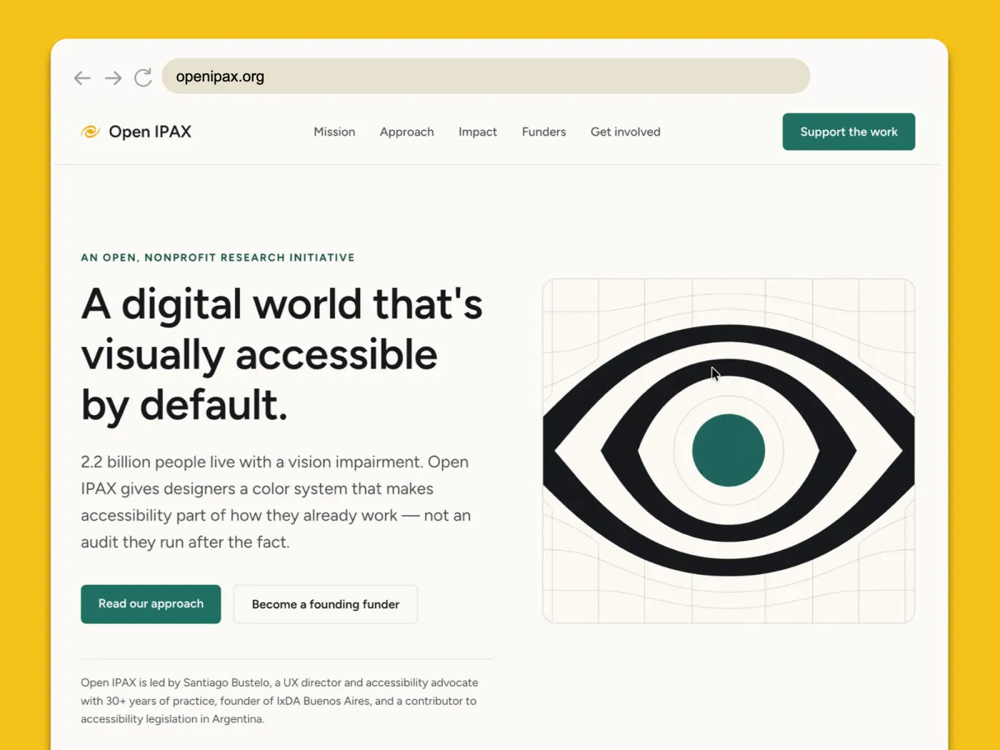
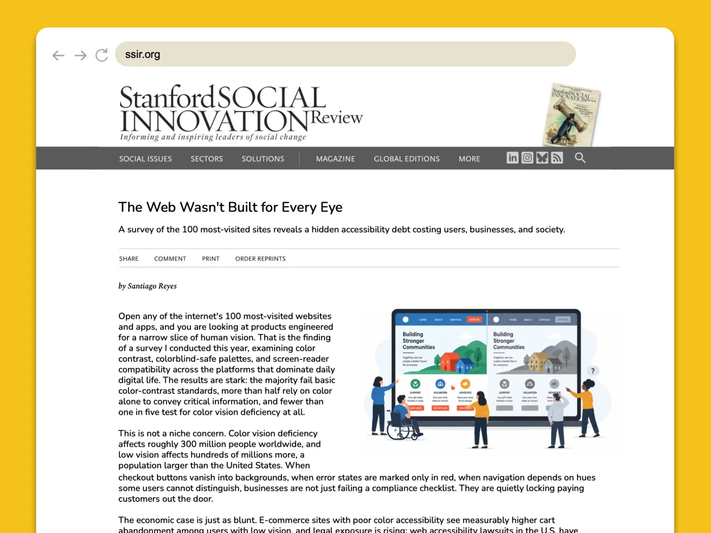
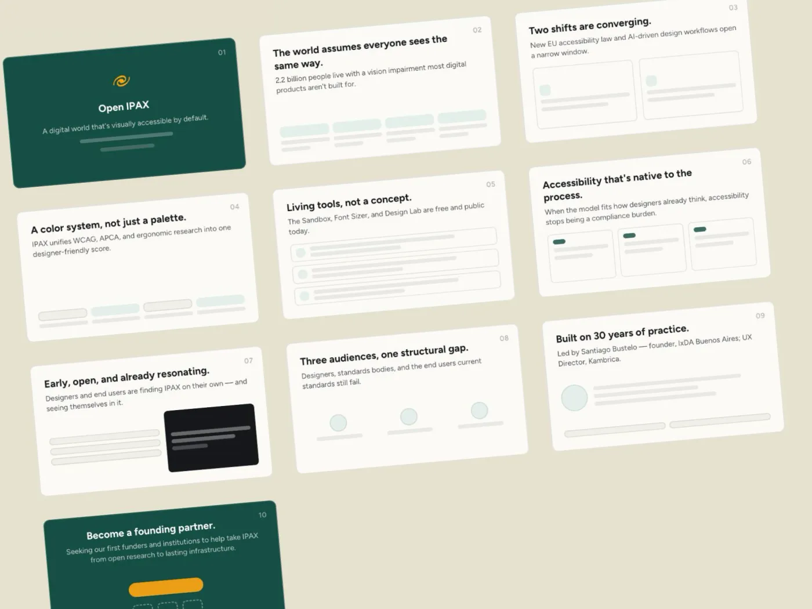
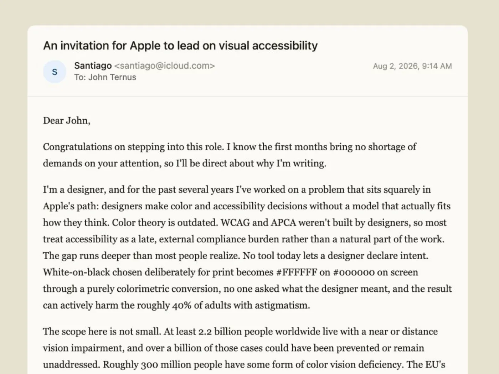

Santiago » you have clear expertise and passion for helping designers address a problem that affects the everyday lives of millions to billions of people.
To find a pathway to funding your work means you must frame your work in the way funders think and show you have a pathway—not to a working tool—but to wide adoption and delivery of valuable benefits.
Below, we've outlined two pathways to funding, one with philanthropic funders and another with commercial funders. In each, we've defined potential frames for the problem/opportunity and the solution.
The hope is that you can see a little better down each pathway.
The aim is that you choose small tests or experiments that start to move you from building functionality to building reality.
Pathway to Philanthropic Funding
The nonprofit Open IPAX is created with a mission to create a digital world that's visually accessible to all: to bring, by default, visually accessible digital experience to the billion-plus visually challenged people.

The problem
The digital experiences our world runs on are built on visual perception, yet the digital environment excludes and disadvantages many: 2.2 billion people worldwide have a near or distance vision impairment, and 300 million people have some form of color vision deficiency.
The solution
Integrate accessible practices into the natural work of designers and builders of digital experiences so inherently more accessible digital products and services are available to a broader range of users.
Evolved theory of change:
If digital teams adopt quality and accessibility as natural parts of their work rather than external compliance burdens,
then the products they build are inherently more accessible to a broader range of users
so that millions-to-billions of people are enabled, not thwarted, by the digital experiences that are core to our work, leveraging their full participation in our economy, society, and future.
Why now?
The EU's European Accessibility Act began enforcement in 2025, finally creating a standard and rationale for addressing visual accessibility. Meanwhile, AI is remaking the design-and-build process, creating opportunity for accessibility to become an intentional default, not an expensive afterthought.
The funding pathway
- Target Funders: Seek out purpose-aligned high net worth individuals, small family foundations, or open challenges put forth by philanthropic foundations.
- Create an Ideal Funder Profile
- Run weekly research scan against profile
- Improve proposals and targeting with fundraising tools like Aloki Impact Launchpad
- Example Test: Will funders take a meeting with you? Create an IPAX.org site (to convey intent for a nonprofit), write and place an article about the scope of the problem and your outline for a solution, share the article with prospective early funders and ask for an informational meeting to get their advice.

Pathway to For-Profit Funding
The IPAX startup is launched, with a value proposition, demo, and sign-in with a low-barrier cost, while pitching funders for investment.

The opportunity
New European regulations, an under-served population, and AI-coding necessitate a subscription solution that makes the design and build of visually accessible digital experiences a powerful default.
The solution
Required, valuable, easy, and accessible color systems for every digital experience, integrated into the tools and platforms teams already use. IPAX is the first of many solutions that bridge great design and product with regulation and access.
Why now?
(Same answer as above:) The EU's European Accessibility Act began enforcement in 2025, finally creating a standard and rationale for addressing visual accessibility. Meanwhile, AI is remaking the design-and-build process, creating opportunity for accessibility to become an intentional default, not an expensive afterthought.
The funding pathway
- Target Clients: You are looking for a first “lighthouse client” that needs and raves about your product. To you and them it probably feels like a service, like your consulting on-top-off your product.
- Target Investors: Early stage angel investors who might both have a personal connection to vision and accessibility but also have experience in SaaS and commercial software tools.
- Example Test: Create a pitch deck and share it with (1) a design team leader at an aligned brand, (2) a design systems tool creator, and (3) a AI-design-tool creator asking them to meet so you can uncover their most painful related need and convert them into a first paying user. You're working to find Product-Solution Fit with a client while telling a story of Product-Market Fit to funders.

Is this open source?
Note that we believe neither pathway conflicts with your Inventor's Strategic Matrix finding that open source is the right stance for now.
- For the Philanthropic pathway, open source is a promise of greater adoption and impact.
- For the For-Profit pathway, it ensures the value is in the distribution and delivery, while the underlying standard can improve through a wider community.
Our take
You have been building out the solution you know the world needs. But to get funders you can't sell the solution as is. Instead, you have to sell them on the problem/opportunity and your passion and potential to solve it.
To unlock funding, you'll have to stop prototyping the product and start prototyping the business/nonprofit that decision makers will want to invest in.
Questions for you:
- Of the 2 pathways: what's exciting? What feels like a slog?
- Which pathway is the most promising for your work? What feels the highest impact? Most viable?
- What are you open to? What's off the table? New entities like a non-profit? Partnerships? Sharing equity? A transfer of ownership to see it succeed?
❧